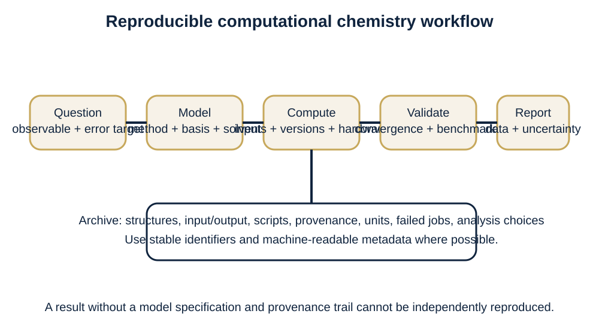

1. Computational chemistry as a model-building science
Computational chemistry is not a single algorithm or software package. It is the disciplined use of mathematical models, numerical algorithms, and molecular representations to predict or rationalize chemical structure, energy, properties, and behaviour. IUPAC defines the field broadly around calculation of molecular properties and simulation of molecular behaviour; the uploaded texts likewise emphasize that different questions require different models. [1,2,4,10]
The central professional skill is therefore model selection. Every result is conditional on a molecular model, a representation of the environment, numerical tolerances, and a protocol. This module establishes the accuracy–cost–interpretability trade-off and the distinction between an observable, a model-dependent descriptor, and a program output.
Module learning outcomes
- Distinguish theory, model, method, algorithm, code and computational experiment.
- Classify a requested quantity as directly observable, derived, or model-dependent.
- Choose a defensible first computational strategy from molecular size, chemistry and target accuracy.
- Record enough provenance for a calculation to be reproducible.
1.1 What a calculation actually predicts
A computation maps a specified molecular description to numerical or structural output. Typical targets are equilibrium geometries, conformer or isomer energy differences, barriers, frequencies, spectra, charge distributions, response properties, and trajectories. A calculated geometry is a stationary structure on a model potential-energy surface; a calculated spectrum is normally obtained from energy differences and transition properties, often with additional approximations. [1,2]
A crucial distinction is between molecular properties and bulk properties. The melting point of a substance, for example, depends on collective packing and thermodynamics, not on an isolated molecule alone. This distinction prevents a common beginner error: asking a gas-phase single-molecule calculation to answer a condensed-phase question without an environmental model.
1.2 The hierarchy of models
Molecular mechanics replaces electronic structure by a parameterized classical energy function and is efficient for large systems, but it cannot by itself describe bond breaking or electronic excitation. Semiempirical and tight-binding approaches retain electronic degrees of freedom while simplifying and parameterizing the quantum problem. Hartree–Fock, correlated wave-function methods and density-functional methods treat electrons explicitly at progressively different balances of cost and accuracy. Sampling methods such as molecular dynamics and Monte Carlo answer another dimension of the problem: which configurations are thermally accessible? [1–4]
No method is “best” in the abstract. A protein conformational search, a bond dissociation, a redox potential, a UV spectrum and a high-accuracy thermochemical benchmark pose different requirements. A robust workflow often combines methods—for example low-cost conformer generation followed by DFT refinement and a higher-level single-point energy.
1.3 Accuracy, precision and validation
Numerical precision is not the same as chemical accuracy. Reporting an electronic energy to many decimal places says nothing about model error. Validation asks whether a model is fit for the intended domain by comparison with reliable experiment, higher-level calculations, or benchmark datasets. Relative energies often benefit from cancellation of systematic errors, whereas absolute observables may be more demanding. [2]
A validation plan should be specified before interpreting results: define the property, reference data, statistical metric, acceptable error, and chemical domain. Outliers deserve mechanistic investigation rather than being hidden inside a mean error.
1.4 Reproducibility and computational provenance
A reproducible calculation records molecular identity and coordinates, charge and multiplicity, method, basis set or force field, solvent/environment model, software and version, relevant thresholds, integration grids, convergence settings, constraints, and post-processing. Input and output files are scientific records, not disposable technical debris. Modern repositories such as QCArchive explicitly organize records by molecule and computational specification, illustrating a scalable provenance model. [11]
Good practice also distinguishes the scientific model from the code that implements it. Two correct implementations of the same well-defined model should agree within numerical tolerances; naming only the program is not a sufficient scientific description. [2]

Worked example
A research group wants to rank the acidity of twelve substituted phenols in water. A defensible first plan is: (1) define the thermodynamic cycle and proton reference consistently; (2) generate conformers; (3) optimize neutral and anionic forms with a DFT method appropriate for thermochemistry; (4) include a solvent model and, if hydrogen bonding is specific, test explicit waters; (5) compute thermal corrections; (6) benchmark a subset against experimental pKa or a higher-level method; and (7) report uncertainty. The important result is not merely a list of energies but a model whose limitations are explicit.
Practical / computational activity
Create a one-page “calculation passport” for a molecule of your choice. It must specify the chemical question, target observable, method family, environmental model, convergence checks, expected failure mode, validation reference, and complete provenance fields. Then compare two plausible model chemistries and justify which one you would run first.
Supporting Python exercises are included in the labs/ directory of the course package.
Common misconceptions and examination errors
- A program with a graphical interface is not itself a theoretical method.
- More expensive does not automatically mean more reliable for every property.
- A tiny SCF convergence error does not imply a tiny model error.
- Calculated partial charges depend on their definition and are not unique observables.
Mastery check
Why can two well-converged calculations disagree strongly?
Because they may embody different Hamiltonians, approximations, basis sets, environments or states; numerical convergence only solves the chosen model.
Which item is essential for reproducibility: software name alone, or software version plus method/basis/environment/settings?
The complete specification is essential.
Principal sources: [1–7] Modern/data resources: [10–12]
1. الكيمياء الحاسوبية بوصفها علم بناء النماذج
الكيمياء الحاسوبية ليست خوارزمية واحدة ولا اسم برنامج بعينه، بل هي استخدام منضبط للنماذج الرياضية والخوارزميات العددية والتمثيلات الجزيئية للتنبؤ بالبنية والطاقة والخواص والسلوك الكيميائي أو تفسيرها. ويؤكد كل من تعريف IUPAC والكتب المرفقة أن السؤال الكيميائي هو الذي يحدد النموذج المناسب. [1،2،4،10]
المهارة المهنية الأساسية هي اختيار «كيمياء النموذج» المناسبة: طريقة الحساب، مجموعة الأساس أو مجال القوة، وصف الوسط، ومعايير التقارب. لذلك تُقرأ كل نتيجة بوصفها نتيجة مشروطة بفرضيات محددة، لا حقيقة مطلقة منفصلة عن البروتوكول.
نواتج تعلم الوحدة
- التمييز بين النظرية والنموذج والطريقة والخوارزمية والبرنامج والتجربة الحاسوبية.
- تصنيف الكمية المطلوبة إلى قابلة للقياس مباشرة أو مشتقة أو معتمدة على النموذج.
- اختيار استراتيجية حسابية أولية مبررة وفق حجم النظام وطبيعة الكيمياء والدقة المطلوبة.
- تسجيل بيانات المنشأ بما يكفي لإعادة إنتاج الحساب.
1.1 ماذا يتنبأ الحساب فعلياً
يربط الحساب وصفاً جزيئياً محدداً بمخرجات عددية أو بنيوية. ومن الأهداف الشائعة: هندسات الاتزان، وفروق طاقات المتماكبات والمتوافقات، والحواجز، والترددات، والأطياف، وتوزيع الشحنة، وخواص الاستجابة، والمسارات الديناميكية. والهندسة المحسوبة نقطة ساكنة على سطح طاقة كامنة تابع للنموذج، أما الطيف المحسوب فينشأ عادة من فروق مستويات الطاقة وخواص الانتقال مع تقريبات إضافية. [1،2]
ويجب التمييز بين خاصية الجزيء وخاصية المادة الحجمية. فدرجة الانصهار مثلاً تتطلب وصفاً للتراص والتآثرات الجماعية والديناميكا الحرارية، ولا يمكن استنتاجها من جزيء منفرد في الفراغ وحده.
1.2 هرم النماذج
تستبدل الميكانيكا الجزيئية البنية الإلكترونية بدالة طاقة كلاسيكية مُعلَّمة، ولذلك تناسب الأنظمة الكبيرة لكنها لا تصف كسر الروابط أو الإثارة الإلكترونية بذاتها. وتحتفظ الطرق شبه التجريبية وطرق الربط المحكم بدرجات الحرية الإلكترونية مع تبسيطات ومعلمات. أما هارتري–فوك وطرق الارتباط الإلكتروني وطرق دالة الكثافة فتعالج الإلكترونات صراحة بموازنات مختلفة بين الكلفة والدقة. وتضيف الديناميكا الجزيئية ومونت كارلو بعداً آخر: أي التراكيب متاحة حرارياً؟ [1–4]
لا توجد طريقة «أفضل» مطلقاً؛ فبحث توافقات بروتين، أو كسر رابطة، أو جهد اختزال، أو طيف UV، أو طاقة حرارية عالية الدقة مسائل مختلفة. وغالباً يكون سير العمل المتعدد المستويات هو الأنسب.
1.3 الدقة والصحة والتحقق
الدقة العددية لا تعني صحة كيميائية. فطباعة طاقة إلكترونية إلى منازل عشرية كثيرة لا تقيس خطأ النموذج. والتحقق يختبر ملاءمة النموذج للمجال المقصود بمقارنته بتجربة موثوقة أو حساب أعلى مستوى أو مجموعة معيارية. وغالباً تستفيد فروق الطاقة من إلغاء الأخطاء المنهجية أكثر من القيم المطلقة. [2]
تُحدَّد خطة التحقق قبل تفسير النتائج: الخاصية، والمرجع، ومقياس الخطأ، وحد القبول، والمجال الكيميائي. ويجب تحليل القيم الشاذة ميكانيكياً بدلاً من إخفائها داخل متوسط.
1.4 قابلية الإعادة وبيانات المنشأ
يتطلب الحساب القابل للإعادة تسجيل هوية الجزيء وإحداثياته وشحنته وتعدديته والطريقة ومجموعة الأساس أو مجال القوة ونموذج المذيب والبرنامج وإصداره وشبكة التكامل ومعايير التقارب والقيود والمعالجة اللاحقة. ملفات الإدخال والإخراج سجلات علمية وليست نفايات تقنية. وتوضح مستودعات حديثة مثل QCArchive كيف تُنظم السجلات حسب الجزيء والمواصفة الحسابية. [11]
كما يجب فصل النموذج العلمي عن البرنامج الذي ينفذه؛ فاسم البرنامج وحده لا يصف الحساب وصفاً كافياً. [2]
مثال محلول
تريد مجموعة بحثية ترتيب حموضة اثني عشر فينولاً مستبدلاً في الماء. الخطة المبررة هي: تحديد الدورة الثرموديناميكية ومرجع البروتون، توليد المتوافقات، تحسين الشكلين المتعادل والأنيوني، إدخال نموذج المذيب وربما جزيئات ماء صريحة، حساب التصحيحات الحرارية، معايرة عينة فرعية مقابل pKa تجريبية أو طريقة أعلى مستوى، ثم الإبلاغ عن عدم اليقين. القيمة العلمية ليست قائمة طاقات فقط بل نموذج واضح الحدود.
نشاط عملي / حاسوبي
أنشئ «جواز حساب» من صفحة واحدة لجزيء تختاره، يتضمن السؤال الكيميائي والخاصية المستهدفة وعائلة الطريقة ووصف الوسط وفحوص التقارب ومصدر التحقق ونمط الفشل المتوقع وبيانات المنشأ. ثم قارن كيميائيتي نموذج ممكنتين وبرر أيهما تبدأ به.
تتضمن حزمة المقرر برامج بايثون مساعدة في مجلد labs/.
مفاهيم خاطئة وأخطاء امتحان شائعة
- الواجهة الرسومية ليست طريقة نظرية.
- الطريقة الأعلى كلفة ليست تلقائياً الأدق لكل خاصية.
- تقارب SCF الشديد لا يعني أن خطأ النموذج صغير.
- الشحنات الجزئية تعتمد على تعريفها وليست ملاحظة وحيدة التعريف.
فحص الإتقان
لماذا قد يختلف حسابان متقاربان عددياً بشدة؟
لأنهما قد يستخدمان نماذج أو تقريبات أو مجموعات أساس أو أوساطاً أو حالات إلكترونية مختلفة؛ التقارب العددي يحل النموذج المختار فقط.
هل يكفي اسم البرنامج لإعادة الحساب؟
لا؛ يلزم الإصدار والطريقة ومجموعة الأساس والوسط والإعدادات الأساسية.
المصادر الرئيسية: [1–7] مصادر حديثة/بيانات: [10–12]